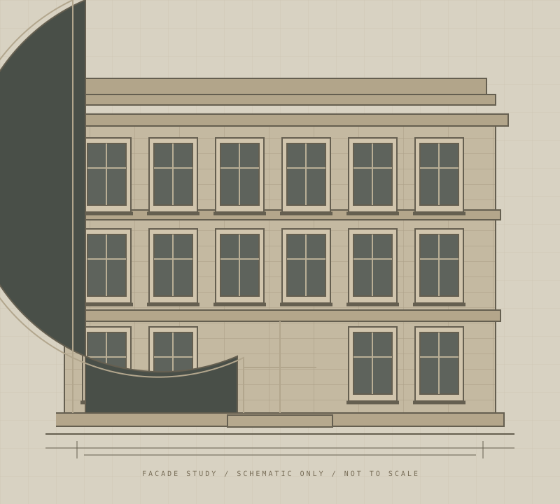

从单体到街区
立面保护需要与街道尺度、视线通廊及步行连续性一起考虑。孤立的建筑修缮，无法替代完整的公共空间体验。
THE BUND · ARCHITECTURAL ARCHIVE / NO. 007
上海 · 黄浦江畔
外滩七号建筑数字影像档案
从立面的细节出发，理解建筑、时间与城市的关系。

BUND01 / BUILDING IDENTITY
先辨认，再理解。将已知、待核实与研究判断分开记录。
02 / READING THE FACADE
点击图中编号，学习建筑观察方法。此图为通用教学示意。
03 / THROUGH TIME
拖动滑块或选择节点，查看各阶段需要追索的证据；这些阶段并非已核实的建筑年表。
04 / SIDE BY SIDE
建立比较框架，避免将“外观相似”直接等同于“历史相同”。
| 观察维度 | 外滩七号 |
|---|
比较内容为研究问题清单；年代、风格分类及功能变迁需经官方资料核实后填写。
05 / VISUAL COLLECTION
影像不仅是记录，也是一种理解空间的方式。点击图卡放大。
素材来源：本项目原创 SVG 教学示意（2026）。非真实建筑影像、非测绘成果。真实照片与图纸待补充授权来源。
06 / LOOK A LITTLE CLOSER
回到上方立面，点击符合提示的编号。
在观察中，找到建筑的秩序。
三道观察题，无时间限制。可随时重新开始。
07 / BEYOND THE BUILDING
立面保护需要与街道尺度、视线通廊及步行连续性一起考虑。孤立的建筑修缮，无法替代完整的公共空间体验。
历史建筑活化应尊重既有价值，同时关注公众可达性。研究可记录开放时段、入口可识别性和无障碍路径。
以外滩为黄浦江案例，再选取苏州河案例，用相同指标比较滨水可达性、历史延续性和日常活动。首版尚未完成两岸实地对比。
建议依次收集：现场门牌与铭牌、上海市政府历史建筑保护名录、地方志、档案馆资料、带拍摄日期的自摄照片。每条事实记录作者、标题、发布机构、日期、页码或链接与访问时间。
本页不声称已经查阅上述资料。可从 上海市人民政府网站 ↗ 开始检索。示意图中的比例、层数和装饰不代表外滩七号真实形态。